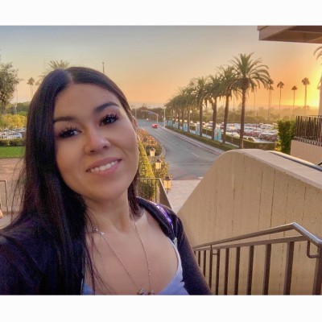

Bio
Marcus Jones is a highly skilled individual who possesses a diverse range of talents, enabling him to effectively assist and consult businesses in any capacity. With a background in the arts, Marcus has a keen eye for detail, ensuring that any visual products meet the highest standards of quality. Moreover, his expertise in branding and marketing allows him to delve deeper into the psychology of customer needs and wants, ensuring that any products or services meet those requirements effectively.
In summary, Marcus Jones is a uniquely gifted individual whose talents and skills make him an asset to any team. His well-rounded experiences and expertise in various fields enable him to offer a rare blend of skills that any business would be fortunate to have.
Engineering the life I was programmed to liveWork Examples
As a Team Lead, at Bloomtech, I managed a cross-functional team of developers and UX/UI Designers during a two month labs project at BloomTech. I also scripted the presentation.
This MVP was developed by a cross-functional team of African based Developers and UX/UI Designers. As the project manager, we meet weekly for sprints and review with the stakeholder.
Recommendations
-
 Bernie DurfeeDirector of EngineeringBernie managed Marcus directly
Bernie DurfeeDirector of EngineeringBernie managed Marcus directlyMarcus was on my team as a Section Lead for the Lambda School Labs program. The Labs program has hundreds of students working across dozens of teams on software projects at any given time. Section Leads manage a set of those teams to keep them moving forward.
Labs is a highly complex, fast-moving and demanding environment. Section Leads report directly to an Engineering Manager and provide day-to-day support for teams, as well as coordinate between students and various parts of the Lambda School staff.
Marcus has done a fantastic job as a Section Lead.
I can always depend on Marcus to provide a clear picture of how teams are doing. I can always trust Marcus to work with the teams to provide them guidance and insight.
Marcus has a particularly strong skill in understanding when to provide direct guidance and when to consult with others to find a way forward. He ran teams that focused on everything from eCommerce to data science and never faltered in his ability to help them make their projects happen.
Marcus is an asset to any team and I highly recommend him for any role!
-
David MonsonHead Of Design at InstaworkDavid worked with Marcus but on different teams
I worked with Marcus while he was section lead during Lambda Labs. He was a great team leader, was punctual, professional and very well organized. Marcus did a great job pushing each of the labs teams to the finish line and ensured they reached a successful outcome. He had to tackle many unforeseen roadblocks along the way and handled them very well.
-

Katharine A. HolderfieldUX Designer at BLAZEUX Designer at BLAZEKatharine A. worked with Marcus on the same team
I had the pleasure of working with Marcus during my time as a co-section lead at Lambda school. He was a welcoming and positive person right from day one, being very attentive and helpful as I learned my new role. He often guided our group of section leads through tasks we did not know how to do and did so with patience. He is a very intelligent person and any team would be lucky to have him!
Software Engineering Skills
Technical Skills
- Frontend: CSS, Redux, Hooks, Storybook, Javascript, React, Nextjs, Angular, React Native, SaSS/Less, Grid, Flexbox, Git, Webpack
-
Backend: Node, Nexus, Prisma, Express, Postgres, Docker, Git CLI, Vercel, CASL(auth), GraphQL, Docker, JWT, REST, OAuth
- Additional: Agile Project Management, Roadmap Architect, Section Lead, Team Building, Team Lead, DevOps, Branding, Marketing
Technical Management Skills
Code example demonstrating management of a technical project:
1. Greenfield and Brownfield Project Management- Led teams of 200+ individuals/experts across 15+ projects, resulting in all teams finishing their projects within the allotted time. Improved brownfield project efficiency by 20% by reviewing and analyzing existing projects for improvements and updates.
2. Agile Methodology- Implemented Agile methodology, improving project delivery times by 15% and facilitating efficient project management, resulting in a 20% increase in team productivity.
3. Risk Management- Identified potential delays, budget overruns, and resource constraints early on and developed contingency plans to mitigate them, reducing project risks by 30% and improving project timelines by 25%.
4. Stakeholder Management- Collaborated with stakeholders to understand their requirements and expectations, provided regular project updates, and managed expectations effectively, resulting in a 20% increase in stakeholder satisfaction and a 25% improvement in stakeholder communication.
5. Project Management- Assisted teams in research ideas, developed KPIs, and outlined tech stack scope, resulting in improved project efficiency by 15% and a 20% increase in project success rates. Led successful projects from conceptualization to product delivery and improved existing projects for efficiency.
Hobbies
Intros Developed with Adobe After Effects